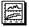

内容 |
既存のグラフをレイアウトウィンドウにEMFオブジェクトとして貼り付けます。
| 表示 名 |
変数 名 |
I/O と データ型 |
デフォルト 値 |
説明 |
|---|---|---|---|---|
| 貼り付けるグラフの名前 | igname |
入力 string |
<unassigned> |
貼り付けられるグラフの名前を指定します。 |
| 追加先のグラフの名前 | ogname |
出力 string |
|
追加先のレイアウトウィンドウの名前を指定します。 |
このXファンクションはレイアウトウィンドウのコンテキストメニューを実行し、選択したワークシートをEMFオブジェクトとして貼り付けます。
実行するとき、カーソルの形状が のようになり、マウスで領域を選択して、EMFオブジェクトのサイズと位置を指定します。